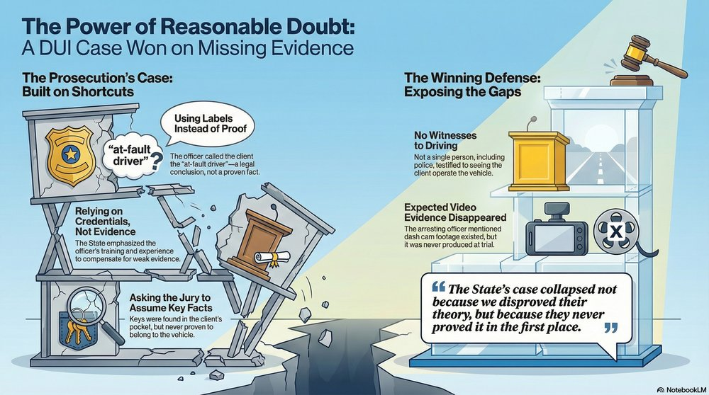

DUI Acquittal: Missing Evidence Creates Reasonable Doubt

Police assume. Prosecutors argue. But juries decide. What happens when the State builds a DUI case on conclusions instead of evidence?
Our client walked out of an Orange County courtroom with two words: Not Guilty.
The jury rejected the State's DUI case not because of brilliant legal arguments or aggressive cross-examination, but because the State never proved its case.
No witness saw our client drive. No one testified to watching her exit the vehicle. Expected evidence never appeared. Critical witnesses never showed up.
Trials are messy. Evidence goes missing. Witnesses fail to appear. Judges make rulings you wouldn't expect.
And in that mess, reasonable doubt grows. This case teaches an important lesson: sometimes the best defense is simply pointing at what isn't there.
The Key Takeaway
Under Florida's standard jury instructions, reasonable doubt can come from three sources: the evidence presented, conflict in the evidence, or lack of evidence. In this case, the jury found reasonable doubt in what was missing—no driving witnesses, no video, no foundation for key facts.
Reasonable Doubt: It's Not Just What They Prove
Every jury in Florida receives standard instructions on reasonable doubt. The instruction tells jurors that reasonable doubt can arise from:
- The evidence: What was presented proves innocence or undermines guilt
- Conflict in the evidence: Witnesses contradict each other
- Lack of evidence: Critical proof is simply absent
That last one is where this case was won.
"The State's case collapsed not because we disproved their theory, but because they never proved it in the first place."
The jury didn't need to believe our client was innocent—they just needed to see that the State left too many gaps.
The Presumption of Innocence Still Matters
Our client didn't walk into that courtroom needing to prove she didn't commit DUI. She walked in presumed innocent. The State had to prove beyond a reasonable doubt that she drove while impaired. They couldn't. That's the system working exactly as designed.
How the State Substitutes Authority for Evidence
In the trial that led to this acquittal, the State attempted several shortcuts that collapsed under scrutiny.
The "At-Fault Driver" Label
Throughout the trial, the officer referred to our client as the "at-fault driver." But this is a legal conclusion, not a fact. It presupposes:
- Identity: Who was driving?
- Causation: What caused the crash?
- Fault: Who is legally responsible?
Each of these is a jury determination. By using the label, the State attempted to smuggle identity into evidence without actually proving it through witnesses. No one testified to seeing our client drive or exit the vehicle.
Expert Bootstrapping
When the State lacks evidence, prosecutors often turn to officer training and experience to fill the gaps. In this trial, the State attempted to use the officer's credentials to:
- Fill witness gaps — no one saw the defendant drive
- Supply missing foundational facts — keys were in the defendant's pocket, but no one tested whether they fit the vehicle
- Replace actual testing with conclusions — based on experience rather than evidence
But expert testimony can interpret evidence. It cannot create evidence. An officer's opinion that someone "must have been" the driver is not proof that they were.
The DRE Credential Problem
In this trial, the officer had been trained as a Drug Recognition Expert (DRE)—specialized training for detecting drug impairment.
But on the date of trial, he was not currently certified or qualified as a DRE.
The judge ruled that while the officer could testify about his training, he could not provide expert testimony about the scientific results of the Horizontal Gaze Nystagmus (HGN) test.
This ruling excluded critical impairment evidence. The State couldn't use the DRE credentials to bolster the officer's conclusions about impairment.
And yet, throughout the trial, the prosecution kept trying to work around the ruling—attempting to bootstrap the expert testimony in through the back door.
The Credential vs. Certification Distinction
Credentials mean nothing if you can't use the actual expertise. The State wanted the authority of the DRE title without being able to present the scientific foundation that comes with it. The judge drew a clear line: training can be mentioned, but expert conclusions based on that training cannot be presented as fact when the certification isn't current.
The Keys-in-Pocket Problem
The State emphasized that our client had keys in her pocket. But no testimony established that the keys actually belonged to the crashed vehicle. No testing was done. No foundation was laid. The prosecution wanted the jury to infer identity from proximity, but inference is not proof beyond a reasonable doubt.
Bolstering When Evidence Is Weak
A pattern emerged at trial: as the State's evidence weakened, bolstering increased. The prosecution emphasized:
- Number of field sobriety exercises conducted
- Number of DUI arrests in the officer's career
- Years of experience
- Training certifications
Bolstering inflates credibility and encourages deference. But it proves nothing about this case. An officer's resume does not establish that the defendant was driving or was impaired at the time of driving.
Defense Insight
When you see heavy emphasis on officer credentials, ask: What is this testimony compensating for? Bolstering often signals that the actual evidence is thin.
What Was Missing: A Case Built on Gaps
Here's what the State didn't have:
What Disappeared Before Trial
Before the trial even started, pre-trial motions resolved several charges that our client originally faced.
The initial charging document included not just DUI, but also:
- Possession of multiple driver's licenses
- Vape pen possession
By the time the jury was seated, those secondary charges were gone.
The jury never heard about the licenses. They never heard about the vape pen.
The trial focused solely on the elements the State could actually prove—or in this case, attempt to prove.
Defense Work Starts Early
Defense work doesn't begin when the jury walks in. It starts the moment charges are filed. Pre-trial motions matter. What the jury never hears can be just as important as what they do.
No Witnesses to Driving
Not a single person testified to seeing our client behind the wheel. Not the other drivers. Not the firefighters who arrived first. Not the EMS personnel. The officer who made the arrest didn't see her drive either—he arrived after the crash. Identity as the driver? Assumed, not proven.
No Video Evidence
The officer testified that he believed dash cam footage existed. He believed refusal video existed. Yet neither was produced at trial. When pressed, the State's only explanation was "we don't always have video." That's not an explanation—that's an admission.
When expected evidence is missing and the State can't explain why, reasonable doubt doesn't shrink. It grows.
No Foundation for Key Facts
The State presented keys found in our client's pocket. But no one testified that those keys fit the crashed vehicle. No testing. No confirmation. Just an inference the jury was supposed to make on their own. That's not how proof beyond a reasonable doubt works.
No Proof of Impairment at the Time of Driving
Field sobriety exercises were conducted 85 minutes after the crash.
Even if our client showed signs of impairment then, that doesn't prove impairment while driving.
Crash trauma causes confusion, unsteady gait, and bloodshot eyes. So does shock. So does sitting in an ambulance for an hour after a collision.
"The State needed to connect impairment to the act of driving. They couldn't. And for a charge called 'Driving Under the Influence,' that's a problem."
Why This Defense Works
The State doesn't get to skip steps. They don't get to say "probably" or "most likely" or "it makes sense that..." They have to prove each element beyond a reasonable doubt. When they can't, you walk.
Trials Are Messy—And That's Where Reasonable Doubt Lives
If you've never been through a jury trial, here's what courtroom shows don't tell you: trials are unpredictable.
Witnesses don't show up. Evidence disappears. Judges make rulings that surprise both sides.
The State walks in confident and leaves scrambling to explain gaps.
In this case:
- Expected witnesses never appeared — no one testified about who was driving
- Video evidence disappeared — the officer mentioned it existed, but it was never produced
- DRE testimony excluded — the judge ruled the officer couldn't give expert HGN testimony because he wasn't currently certified, even though he was DRE-trained
- Unpredictable rulings — the judge allowed certain testimony over objection, and excluded other testimony we thought would come in
- Hearsay rules blocked gap-filling — statements the State wanted to use to fill evidence gaps were kept out
And that's normal. Trials don't go according to plan.
Evidence rules limit what can be said. Judges rule contrary to what either side expects.
The DRE exclusion is a perfect example: even when the judge says no, prosecutors still try to work around the ruling—attempting to bootstrap excluded testimony in through other questions.
But evidence rules create real boundaries. When the foundation isn't there, the testimony doesn't come in.
The system is deliberately designed to require proof, not assumptions.
Why Juries Still Demand Proof
After closing arguments, the jury received Florida's standard reasonable doubt instruction. That instruction is the great equalizer—it strips away officer credentials, prosecutor arguments, and assumptions. It brings everything back to a simple question: Did the State prove its case?
The jury instructions made clear:
- The defendant is presumed innocent
- The State bears the entire burden of proof
- Reasonable doubt can arise from the evidence, conflict in the evidence, or lack of evidence
- If the State fails to prove even one element, the verdict must be not guilty
When the jury closed the door and reviewed what the State had actually proven—not argued, not implied, but proven—the answer was clear: not enough.
The Verdict
NOT GUILTY. The jury rejected the State's shortcuts. They refused to convict based on assumptions, labels, or credentials. They demanded proof, and the State could not provide it.
What This Means for Your DUI Case
If you're facing DUI charges in Orlando or Central Florida, here's what this case teaches:
1. The State's Gaps Are Your Defense
Missing witnesses? Missing video? Missing foundation? Those aren't just inconveniences for the prosecution—they're reasonable doubt. Your defense attorney's job is to point at what's absent and ask the jury: Is that proof beyond a reasonable doubt?
2. Don't Fill in the Blanks for Them
If the State can't prove you were driving, don't hand them that proof by making statements. If they can't prove impairment at the time of driving, don't supply it by admitting to drinking before the crash. Silence isn't guilt—it's a constitutional right. (Read more: Why Silence is Your Best Defense)
3. Presumption of Innocence Is Real
You don't walk into court needing to prove your innocence. The State walks in needing to prove your guilt. That's not a technicality—it's the foundation of our justice system. And when juries take that instruction seriously, cases fall apart.
4. Trial Experience Matters
As a former Florida Highway Patrol Trooper and former Deputy Sheriff, I know how DUI cases are built. I also know where they break. I've seen what happens when the State expects witnesses who don't show up, when video disappears, when evidence rules exclude critical testimony. Trials are messy. Experience navigating that mess matters.
5. Reasonable Doubt Can Come From What's Missing
The jury instruction is clear: reasonable doubt can arise from lack of evidence. That means you don't need to present a competing story. You don't need to prove what "really" happened. You just need to show that the State didn't prove their story beyond a reasonable doubt.
Related Resources
Facing DUI Charges? We Expose What the State Can't Prove.
DUI cases are built on assumptions, shortcuts, and authority. An experienced defense attorney challenges every element and demands actual proof.
Former State Trooper | Former Deputy Sheriff | Jury Trial Experience

Jeff Lotter
Criminal Defense Attorney | Former State Trooper
Jeff Lotter is an Orlando criminal defense attorney and former Florida Highway Patrol trooper. He uses his law enforcement background to build stronger defenses for clients facing criminal charges.
Related Articles
Trial-Ready Defense Forces Favorable DUI Resolution in Brevard
BlogOrlando DUI Lawyer: Why Local Experience Matters
Not all DUI lawyers know Orange County courts. Local experience means knowing the judges and prosecutors.
BlogData-Driven Defense: What Nearly 10,000 Court Filings Reveal About New Year's Week
Defense attorneys who understand case patterns build better strategies.
Blog